|
Final Fantasy IV Japan
Finalfantasy Version ภาษา Japan มีความแตกต่างกับภาคภาษา English
โดยภาคภาษา Japan จะเป็น Version ต้นฉบับ
และภาคภาษา English นั้นเป็น Version แบบง่าย
ได้ตัดทอน Item ไปหลายชิ้น โดยเฉพาะ Item ใช้แทนเวทย์มนต์
อีกทั้งยังได้ลดทอน Skill ของตัวละครบางตัวออกไปด้วย
รวมทั้งความยากที่ลดลง ทำให้เล่นได้ง่ายมากขึ้นในภาคภาษา English
และที่สำคัญที่สุด ในภาคภาษา English นั้นใช้ชื่อว่า Finalfantasy II
เพราะว่าภาค 2 และภาค 3 นั้น ในขณะนั้นไม่มีการแปลเป็นภาษา English
จึงเริ่มนับภาค IV นี้เป็นภาค II ของ Version English
ต่อไปเป็นรายชื่อ Skill ที่มีเฉพาะใน Version ภาษา Japan นะครับ
* Note : ภาพทั้งหมดมาจากเครื่อง WonderSwan นะครับ
Cecil Harvey
เฉพาะอาชีพ DKnight (Dark Knight) เท่านั้น
Skill : Dark
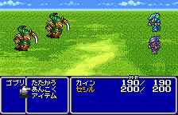
ยิงพลังคลื่นออกไปโจมตีศัตรูทุกตัว แต่จะเสีย HP ประมาณ 8-9%
Rosa Farrel
Skill : Pray
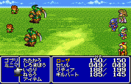
Pray เป็นการเพิ่ม HP ให้กับสมาชิกในกลุ่มทุกคนนิดหน่อย บางครั้งอาจมีผิดพลาดบ้าง
Tellah
Skill : Recall
Recall ใช้เวทย์มนต์แบบสุ่ม แต่บางครั้งอาจมีผิดพลาดทำให้ใช้เวทย์ไม่ได้บ้าง
Edward
Skill : Heal
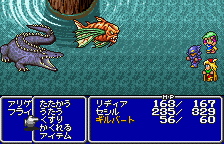
Heal ใช้ Potion กับสมาชิกในกลุ่มทุกคน
* Note : Edward ในภาคภาษา Japan ชื่อ Gilbert
Yang
Skill : Power
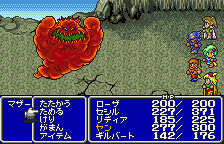
Power ใช้เพิ่มพลังโจมตี
Skill : Bear
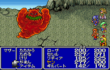
Bear ใช้เพิ่มพลังป้องกัน
Palom
Skill : Bluff
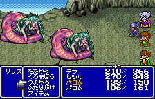
Bluff ใช้เพิ่มความสามารถทางด้านเวทย์มนต์
Porom
Skill : Cry
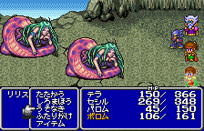
Cry ทำให้สามารถหนีออกจากการต่อสู้ได้ง่ายขึ้น
Fusoya
Skill : Regen
Regen ใช้เพิ่ม HP ให้กับทุกคนในกลุ่มทีละนิดหลายครั้ง
Finalfantasy 4 : WonderSwan
ก่อนอื่นต้องขอบคุณน้องสาวของผมครับที่อุตส่าห์เล่นให้อีกรอบ ^^;
ภาพในเครื่อง WonderSwan สวยงามมากครับ
แต่มีเฉพาะภาคภาษา Japan ซึ่งแน่นอนครับ เล่นยากมาก
(น้องสาวของผม, คุณเธอบ่นใหญ่เลยครับ : P )
Town
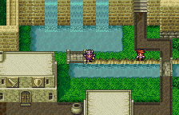
Town
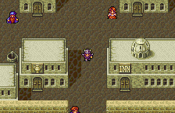
Dungeon
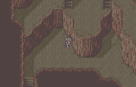
Battle
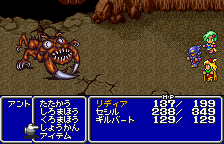
|